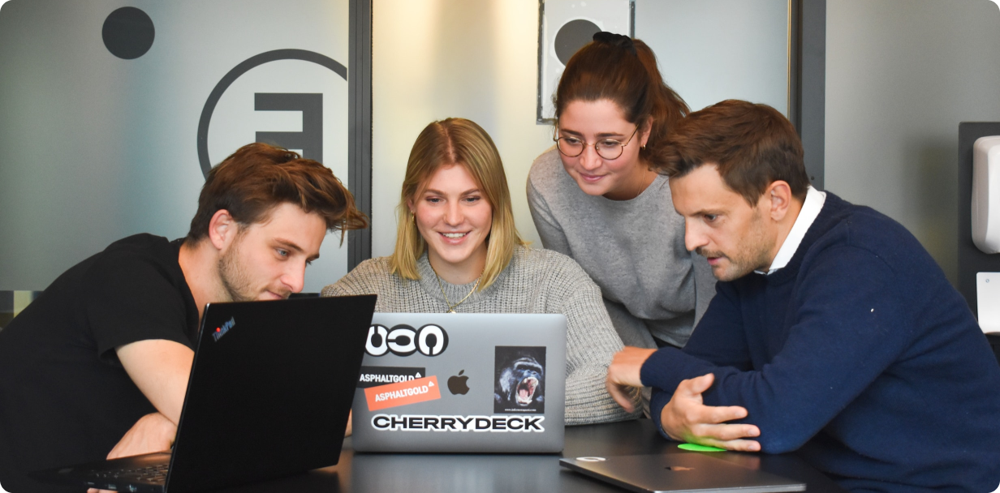

Інновації AI простими словами
у добірці Zarrin
Генеративні моделі, комп’ютерний зір, AI-помічники та відповідальне використання технологій – теми для вдумливого знайомства зі штучним інтелектом.
Про Zarrin
Zarrin – інформаційний ресурс про інновації у сфері штучного інтелекту. У центрі уваги – генеративні моделі, комп’ютерний зір та приклади застосування AI у навчанні, роботі й повсякденному житті. Матеріали допомагають зорієнтуватися в поняттях, зрозуміти логіку технологій і поставити запитання про їхні можливості та обмеження.

Наш підхід
Пояснюємо AI через конкретні завдання: що отримує модель, який результат формує та що потрібно перевірити людині.
01
Відштовхуємося від запитань читача: як працює генерація тексту, навіщо потрібні навчальні дані, де застосовують розпізнавання зображень. Кожна тема має зрозумілий зв’язок із використанням AI та допомагає поступово розібратися в основах.
Докладніше02
Розглядаємо призначення технології, її вхідні дані та типові обмеження. Розрізняємо можливий сценарій застосування й підтверджений результат. Для оцінювання конкретного інструмента важливі документація, умови використання та незалежна перевірка його відповідей.
Докладніше03
Звертаємо увагу на перевірку фактів, приватність і роль людини в ухваленні рішень. Матеріали Zarrin спонукають порівнювати пояснення з першоджерелами та враховувати контекст, у якому використовують AI, замість беззастережно довіряти автоматичній відповіді.
Докладніше
Генеративні моделі, комп’ютерний зір, AI-помічники та відповідальне використання технологій – теми для вдумливого знайомства зі штучним інтелектом.